인물 고정
컷마다 얼굴과 어깨 비율, 옷 핏이 달라졌습니다. 얼굴·헤어 이미지와 의상 참고를 분리하고, 모델시트를 기준으로 필요한 부위만 수정했습니다.
VIDEO · OFFICE BLACK COMEDY
모두가 아이스 아메리카노를 받았다. 왜 나만 다른 한 잔을 받았을까?
CAST & STYLING
진주에게는 난처한 상황, 장부장에게는 나름의 호의. 두 인물이 같은 사건을 다르게 받아들인다는 설정을 표정과 오피스룩에서부터 잡았습니다.

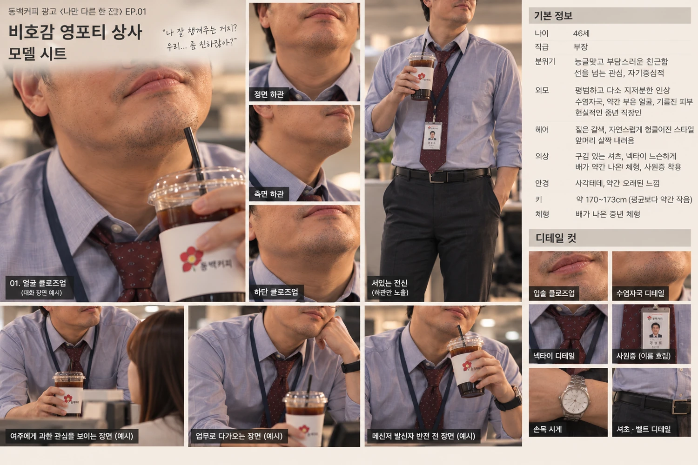
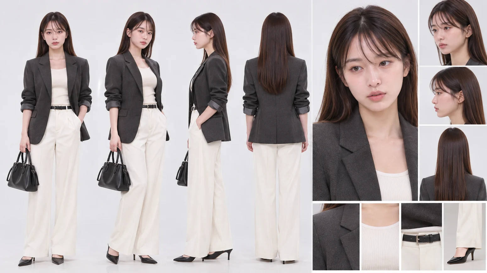
같은 인물에게 다른 옷을 입히는 과정에서 얼굴과 옷 핏이 함께 바뀌었습니다. 얼굴·헤어와 의상 레퍼런스를 분리하고, 정면부터 측면과 뒷모습까지 실루엣을 점검했습니다.
FINAL FILM
약 36초 · 기획 · 시나리오 · Google Flow · Premiere Pro 2026
STORYBOARD
목이 잠긴 진주에게만 따뜻한 도라지차가 도착합니다. 은근한 호의처럼 열린 이야기의 분위기가 사내 메신저의 발신자를 확인하면서 바뀝니다. 빈자리와 사직서를 거쳐, 도라지차를 다시 보여주는 엔딩으로 닫았습니다.
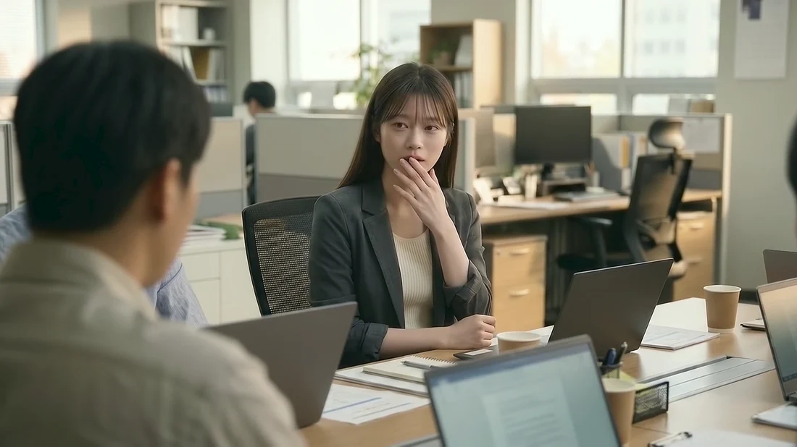
회의 중 목이 불편한 진주를 잡아 따뜻한 음료가 자연스럽게 등장할 이유를 만듭니다.
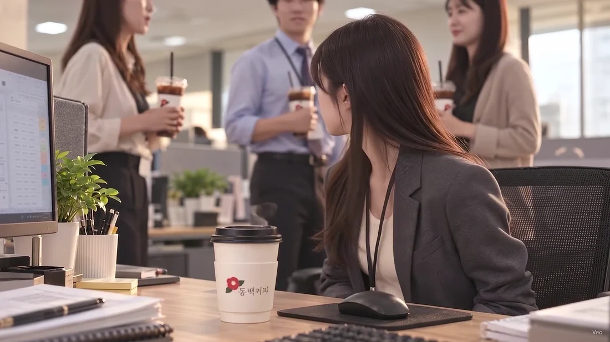
동료들의 투명한 컵과 진주의 종이컵을 한 화면에 둬 작은 차이가 먼저 눈에 들어오게 했습니다.
타이핑을 짧게 보여주고 메신저 화면으로 이어, 누구의 관심이었는지 알아차리는 시간을 줍니다.
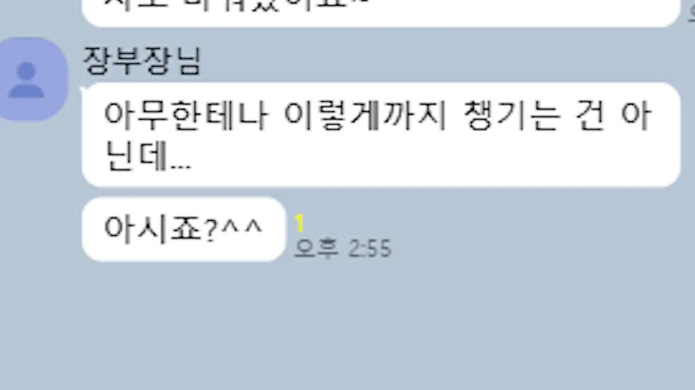
장부장의 말투가 화면에 뜨자 음료의 의미가 달라집니다. 인물의 속내를 자막 설명 대신 메시지로 읽게 했습니다.
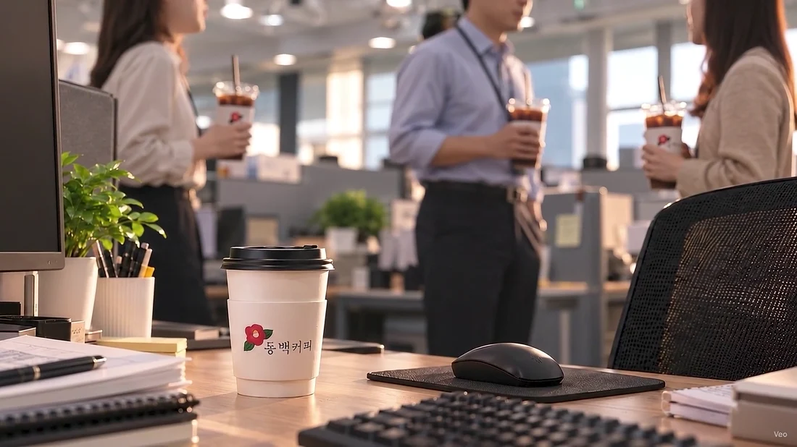
진주의 반응을 길게 설명하지 않고 책상과 빈 의자로 다음 장면을 연결했습니다.
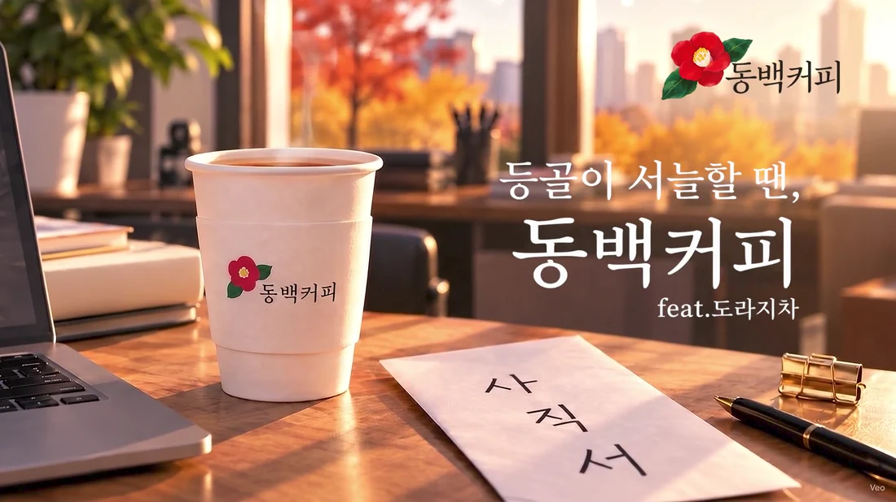
사직서와 컵을 한 프레임에 두고, 브랜드 카피로 블랙코미디를 닫았습니다.
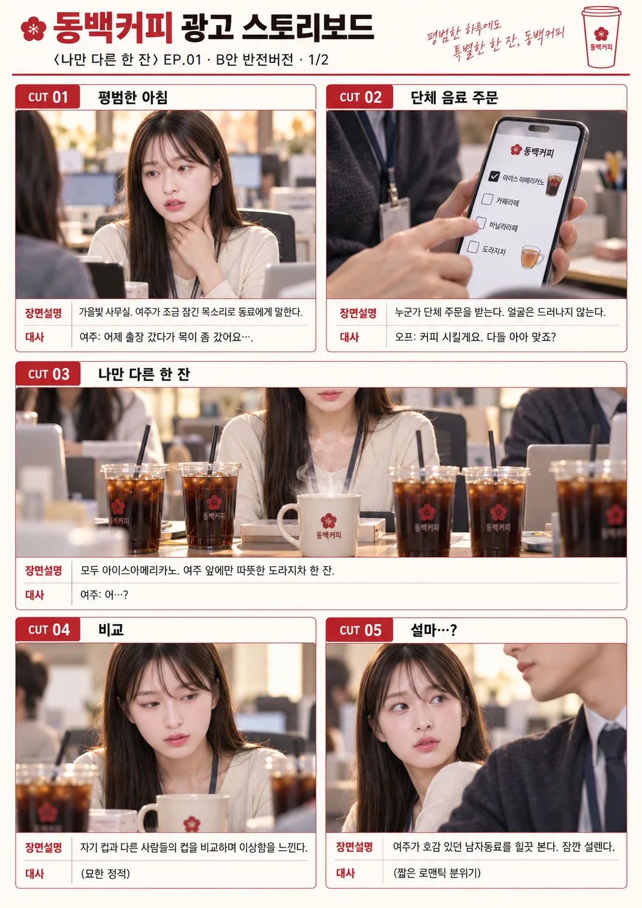
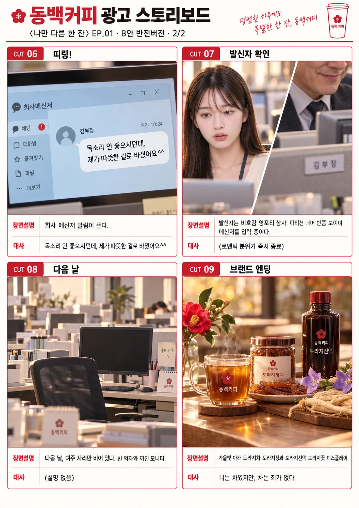
PROBLEM SOLVING
컷마다 얼굴과 어깨 비율, 옷 핏이 달라졌습니다. 얼굴·헤어 이미지와 의상 참고를 분리하고, 모델시트를 기준으로 필요한 부위만 수정했습니다.
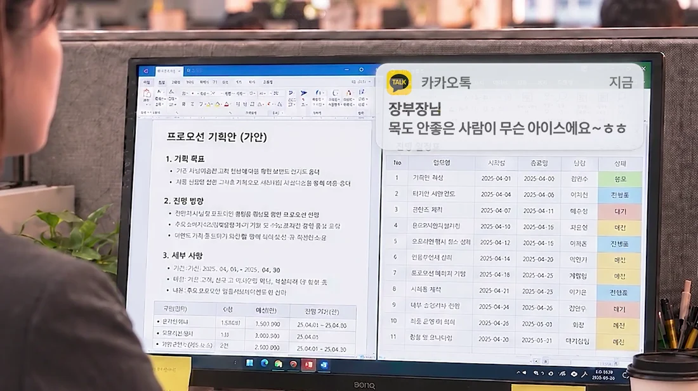
회색 파티션, 책상 배치와 모니터 위치를 장면마다 지정했습니다. 음료 컵도 실제 제품 사진을 참고해 뚜껑과 로고가 달라지는 컷을 점검했습니다.
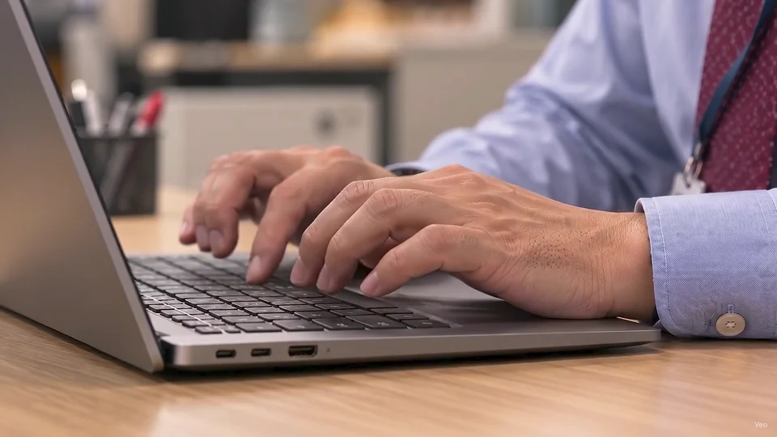
Flow에서 영어 대사가 나오거나 화자가 섞여, 영상 생성과 한국어 후더빙을 나누는 방식을 검토했습니다. 한글 메신저도 별도 그래픽으로 준비해 문구와 등장 타이밍을 편집에서 조절했습니다.